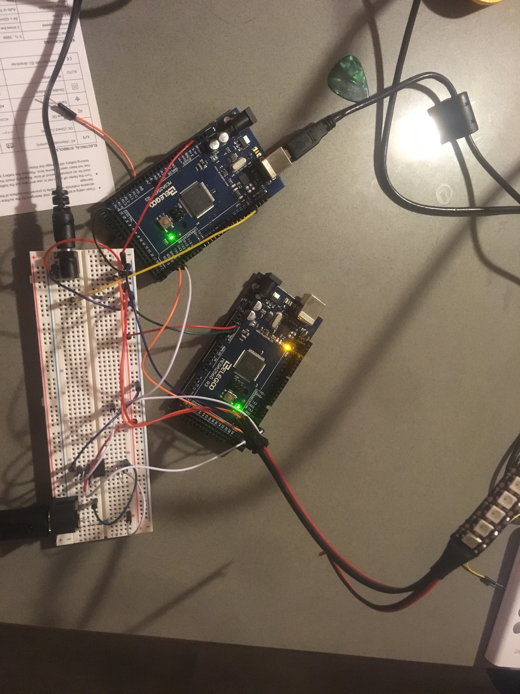

High Power!
Assignment: Use a transistor in a circuit to separate load and logic power. Instead of a transistor, I am using a single channel
optocoupler or opto-isolator (6n137) which uses light to transfer signals between isolated circuits.
Proof of concept video
The flashing sections of LEDs are triggered by different MIDI notes sent from the Novation Circuit drum machine.
In this video you can see the arduino running the lights briefly freeze when all the lights are turned on at
high brightness. I can't figure out why this is happening.
Image: Circuit
This circuit uses 2 Arduino Megas to interpret MIDI messages from a Novation Circuit
drum machine. Using one Arduino, the code was not fast enough to reliably control the LEDs while keeping up with
incoming MIDI messages. I used the Wire library to communicate between Arduinos, and the MIDI and FastLED Libraries for MIDI and LED control.

Gif: Circuit Operation

Circuit Schematic
Code: 2 pieces of code below, one for LED Arduino and one for MIDI Arduino. The two communicate using Wire.
Code for MIDI receiving Arduino
//Libraries used in this project
#include MIDI.h
#include Wire.h
//MIDI on serial port 1 (Arduino MEGA has multiple serial ports)
MIDI_CREATE_INSTANCE(HardwareSerial, Serial1, MIDI)
//is song playing?
boolean playing = false;
//keep track of midi beat timecode
int clock_signal_counter = 0;
int beats = 1; //start on beat 1
//Send a single byte to the other arduino
void wireTransmit(byte t) {
Wire.beginTransmission(1); // transmit to device #1
Wire.write(t); // sends given byte
Wire.endTransmission(); // stop transmitting
Serial.println("Transmitted " + String(t)); //debugging
}
//Send an array of bytes to the other arduino
void wireTransmit(int numBytes, byte t[]) {
Wire.beginTransmission(1); // transmit to device #1
String transmission = "";
for(int i = 0; i < numBytes; i++) {
Wire.write(t[i]); // sends each byte in array
transmission += String(t[i]) + " ";
}
Wire.endTransmission(); // stop transmitting
Serial.println("Transmitted " + transmission); //debugging
}
void setup()
{
//Inter arduino communication
Wire.begin(); // join i2c bus (address optional for master)
Wire.setClock(400000); //fast clock, happy LEDs
//MIDI on Serial 1, serial used for output monitoring
Serial.begin(250000);
Serial.println("Serial on");
//Declare MIDI Library callbacks
MIDI.setHandleClock(handleClock);
MIDI.setHandleStart(handleStart);
MIDI.setHandleStop(handleStop);
MIDI.setHandleControlChange(handleControlChange);
MIDI.setHandleNoteOn(handleNoteOn);
MIDI.setHandleNoteOff(handleNoteOff);
// Initiate MIDI communications, listen to all channels
MIDI.begin(MIDI_CHANNEL_OMNI);
}
void loop()
{
// Call MIDI.read the fastest you can for real-time performance.
MIDI.read();
}
//Unused - called every half beat
void halfbeat() {
}
//Unused - called every whole beat (quarter note)
void beat(int b) {
Serial.println("Beat " + String(b));
/* Wire.beginTransmission(1); // transmit to device #8
Wire.write(0); // sends one bytes - type int - 0 is drum 1
Wire.endTransmission(); // stop transmitting
Serial.println("Transmitted " + String(b));*/
//wireTransmit(0);
}
//Unused
void Synth1(int pitch, int velocity) {
}
//Unused
void Synth2(int pitch, int velocity) {
}
//Transmit drum messages to 2nd arduino
void Drums(int pitch, int velocity) {
/* pitch:
60 - Drum 1
62 - Drum 2
64 - Drum 3
65 - Drum 4
*/
//Serial.println(pitch);
if (pitch == 60) {
//Send drum 1 Wire message
wireTransmit(1);
} else if(pitch == 62) {
//Send drum 2 Wire message
wireTransmit(2);
} else if(pitch == 64) {
//Send drum 3 Wire message
wireTransmit(3);
}
else if(pitch == 65) {
//Send drum 4 Wire message
wireTransmit(4);
}
}
// MIDI Callbacks - called when MIDI events are detected by MIDI.read() in the loop function
// -----------------------------------------------------------------------------
void handleNoteOn(byte channel, byte pitch, byte velocity)
{
//Serial.println("Note on channel: " +
// String(channel) + " pitch: " + String(pitch) + " velocity: " + String(velocity));
if (channel == 1) {
Synth1(pitch, velocity);
} else if (channel == 2) {
Synth2(pitch, velocity);
} else if (channel == 10) {
Drums(pitch, velocity);
}
// Do whatever you want when a note is pressed.
// Try to keep your callbacks short (no delays ect)
// otherwise it would slow down the loop() and have a bad impact
// on real-time performance.
}
void handleNoteOff(byte channel, byte pitch, byte velocity)
{
//Serial.println("Note off channel: " +
// String(channel) + " pitch: " + String(pitch) + " velocity: " +String(velocity));
// Do something when the note is released.
// Note that NoteOn messages with 0 velocity are interpreted as NoteOffs.
}
//void handleAfterTouchPoly(byte channel, byte note, byte pressure);
void handleControlChange(byte channel, byte number, byte value) {
if(value < 0 or value > 127) return;
Serial.println("CC channel: " +
String(channel) + " number: " + String(number) + " value: " +String(value));
//200 = Control change signifier
byte bytes[] = {200,number, value};
wireTransmit(3,bytes);
}
//Unused MIDI Callbacks - will come in handy soon
/*
void handleProgramChange(byte channel, byte number);
void handleAfterTouchChannel(byte channel, byte pressure);
void handlePitchBend(byte channel, int bend);
void handleSystemExclusive(byte* array, unsigned size);
void handleTimeCodeQuarterFrame(byte data);
void handleSongPosition(unsigned int beats);
void handleSongSelect(byte songnumber);
void handleTuneRequest(void);*/
void handleClock(void) {
if (playing) {
//Serial.println("Clock pulse");
clock_signal_counter ++;
if (clock_signal_counter == 12) {
halfbeat();
}
if (clock_signal_counter >= 24) {
clock_signal_counter = 0;
beats++;
//Serial.println("Beats: " + string(beats));
beat(beats);
}
}
}
void handleStart(void) {
playing = true;
Serial.println("MIDI Start");
beats = 1;
clock_signal_counter = 0;
beat(1);
}
void handleContinue(void);
void handleStop(void) {
beats = 1;
clock_signal_counter = 0;
playing = false;
Serial.println("MIDI Stop");
}
void handleActiveSensing(void);
void handleSystemReset(void);
// -----------------------------------------------------------------------------
Code for LED controlling Arduino
//Libraries used in this project
#include
#include
//LED
// Number of LEDs in strip
#define NUM_LEDS 144
//Define zones to make lighting up sections easier
#define RIGHT leds(0,38)
#define TOPR leds(39,72)
#define TOPL leds(73,104)
#define LEFT leds(105,143)
#define END1 leds(0,10)
#define END2 leds(133,143)
#define IN1 leds(11,38)
#define IN2 leds(105,132)
#define CENT leds(55,88)
#define BANDR leds(39,54)
#define BANDL leds(89,104)
//Pin to communicate data to LEDs
#define DATA_PIN 13
// Define the array of leds
CRGBArray leds;
//Which lighting mode am I using - hardcoded/for debugging so far
static const int colorMode = 2;
//Arrays of colors to be synchronized to drumbeats
CRGB colors1[] = {CRGB(153, 0, 76), CRGB(255, 51, 153), CRGB(255, 80, 255), CRGB(0, 0, 255)};
//This HSV colors are controlled by knobs on the drum machine
CHSV midi_colors[] = {CHSV(0, 255, 255), CHSV(40, 255, 255), CHSV(70, 255, 255), CHSV(120, 255, 255)};
//keep track of whether song is playing - currently unused
boolean playing = false;
//keep track of midi beat timecode - currently unused
int beats = 1; //start on beat 1
//unused - track value of filter knob
static int filterValue = 0;
//True when filter == 127 - for changing color values
//Explanation: Turning the filter knob all the way up makes all the sections light up until the filter
//is moved back. This makes it easier to quickly create color palettes
boolean colorChangeMode = 0;
void setup()
{
//Serial for debuggung/monitoring
Serial.begin(250000);
//Wait for serial to start
while (!Serial);
//Check that serial is working
Serial.println("Serial on");
//This arduino receives wire messages from the MIDI arduino thru the SCL/SDA pins
Wire.begin(1); // join i2c bus with address #1
//Fast clock for fast communication
Wire.setClock(400000);
//What to do on reception of wire message
Wire.onReceive(receiveEvent);
//Create LED array
FastLED.addLeds(leds, NUM_LEDS);
//Initialize LED brightness - also controlled by knobs
FastLED.setBrightness(200);
//don't do this one, it's ugly
//FastLED.setDither(0);
}
void receiveEvent(int h) {
//Get first byte of wire message
byte type = Wire.read(); // 1- drum 1
//print first byte
Serial.println("Received type: " + String(type));
/*Perform different actions for different values of the first byte
Some values are an entire message. Some, like value 200 for a Control Change (CC) message,
indicate that there are more bytes in the message. This simple single-byte communication
is generated by the MIDI arduino according to the incoming MIDI messages. Wire only communicates
in single bytes of value 0-255, so MIDI messages had to be stripped down to only what was needed
before being sent to this Arduino.
*/
switch (type) {
//Light up LEFT leds on midi timecode beat - not used anymore
case 0: //MIDI Beat
Serial.println("Midi beat");
LEFT = CRGB(255, 0, 0);
case 1: //Drum 1 Lights up central bands of LEDs
Serial.println("D1");
if (colorMode == 0) TOPL = CRGB(0, 200, 200);
else if (colorMode == 1) {
IN1 = colors1[0];
IN2 = colors1[0];
} else if (colorMode == 2) {
IN1 = midi_colors[0];
IN2 = midi_colors[0];
}
break;
case 2: //Drum 2 lights up the center band of LEDs
Serial.println("D2");
if (colorMode == 0) TOPR = CRGB(150, 0, 200);
else if (colorMode == 1) {
CENT = colors1[3];
} else if (colorMode == 2) {
CENT = midi_colors[1];
}
break;
case 3: //Drum 3 lights the end sections of LEDs
Serial.println("D3");
if (colorMode == 0) {
END1 = CRGB(72, 209, 204);
END2 = CRGB(72, 209, 204);
}
else if (colorMode == 1) {
END1 = colors1[1];
END2 = colors1[1];
} else if (colorMode == 2) {
END1 = midi_colors[2];
END2 = midi_colors[2];
}
break;
case 4: //Drum 4 lights the innermost bands of LEDs
Serial.println("D4");
if (colorMode == 0) {
IN1 = CRGB(250, 69, 0);
IN2 = CRGB(250, 69, 0);
}
else if (colorMode == 1) {
BANDR = colors1[2];
BANDL = colors1[2];
} else if (colorMode == 2) {
BANDR = midi_colors[3];
BANDL = midi_colors[3];
}
break;
case 200: //Control Change
//Control change messages consist of 3 bytes
//the first is 200 which signifies that the message is a CC
//the following 2 bytes communicate which knob and which value are sent
int number = Wire.read();
int value = Wire.read();
Serial.println("CC: " + String(number) + " " + String(value));
if (number == 87) { //Synth 1 Knob 8 - brightness
int bValue = constrain(value, 10, 120);
bValue = map(bValue, 10, 120, 0, 255);
FastLED.setBrightness(bValue);
Serial.println("Bright: " + String(bValue));
} else if (number == 80) { //Synth 1 Knob 1 - color1
int cValue = constrain(value, 0, 127) * 2;
midi_colors[0] = CHSV(cValue, 255, 255);
Serial.println("color1: " + String(cValue));
} else if (number == 82) { //Synth 1 Knob 2 - color2
int cValue = constrain(value, 0, 127) * 2;
midi_colors[1] = CHSV(cValue, 255, 255);
Serial.println("color2: " + String(cValue));
} else if (number == 84) { //Synth 1 Knob 3 - color3
int cValue = constrain(value, 0, 127) * 2;
midi_colors[2] = CHSV(cValue, 255, 255);
Serial.println("color3: " + String(cValue));
} else if (number == 86) { //Synth 1 Knob 4 - color4
int cValue = constrain(value, 0, 127) * 2;
midi_colors[3] = CHSV(cValue, 255, 255);
Serial.println("color4: " + String(cValue));
} else if (number == 74) { //Filter knob for color set - light up all LEDs if filter == 127 (max value)
//filterValue = value;
colorChangeMode = value == 127;
}
break;
}
}
void loop()
{
//Show LEDs at their programmed colors
FastLED.show();
//Show all LEDs if filter == 127
if (colorChangeMode) {
BANDR = midi_colors[3];
BANDL = midi_colors[3];
END1 = midi_colors[2];
END2 = midi_colors[2];
CENT = midi_colors[1];
IN1 = midi_colors[0];
IN2 = midi_colors[0];
//Otherwise, fade all LEDs
} else fadeAll(245);
}
void halfbeat() {
}
void beat(int b) {
}
//UNUSED
/*void Synth1(int pitch, int velocity) {
}
void Synth2(int pitch, int velocity) {
}
void Drums(int pitch, int velocity) {
if (pitch == 60) {
LEFT = CRGB(255, 0, 0);
//FastLED.show();
//delay(5);
//TOPL = CRGB(0,255,255);
}
}*/
//Unused - turn off all LEDs
void allOff() {
for (int i = 0; i < NUM_LEDS; i++) {
leds[i] = CRGB(0, 0, 0);
}
}
//Fade all LEDs by a given value 0=no fade, 255=immediate fade
void fadeAll(int fade) {
//Serial.print(fade);
for (int i = 0; i < NUM_LEDS; i++) {
leds[i].nscale8(fade);
}
}